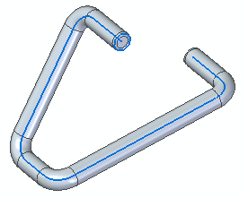
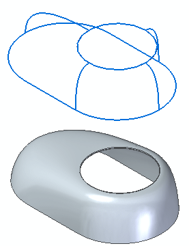

Using 3D sketches
The primary use for 3D sketches is to define the paths for a wire harness, piping, or conduit design. However, you also can combine 2D and 3D sketches to define paths and edges in surface modeling.
You can create 3D sketches in part, sheet metal, and assembly modeling, in both synchronous and ordered modeling.
-
You can use 3D sketches to create a swept protrusion feature, such as the one shown below.
Example:
 Note:
Note:To learn how to create this model, do the Activity: Create a 3D sketch.
-
A 3D sketch is the quickest method to create parts which use a 3D sweep path or a 3D guide curve.
Example:
-
All edges and guide curves are contained in a single 3D sketch.
Example:
Ordered modeling can use both synchronous and ordered 3D sketches. Synchronous modeling does not recognize ordered 3D sketches. However, you can move ordered 3D sketches to synchronous with the Move to Synchronous command.